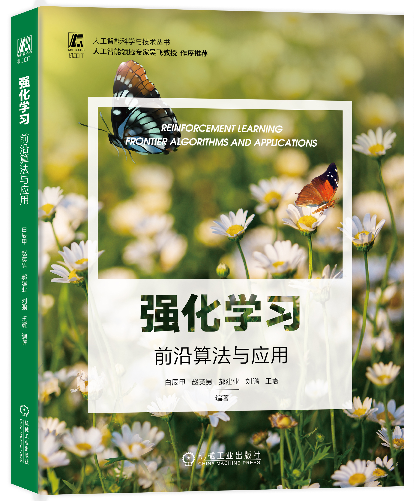

Chenjia Bai 白辰甲
I am a Researcher at Shanghai AI Laboratory. Prior to this, I obtained my Ph.D. degree in Computer Science from Harbin Institute of Technology (HIT), advised by Prof. Peng Liu. My research mainly focuses on deep Reinforcement Learning (RL), including offline RL, robust RL, efficient exploration, representation learning, risk-sensitive learning, and multi-agent RL.
I am fortunate to have been collaborated with many fantastic researchers. I was a visiting student at University of Toronto and Vector Institute, working with Prof. Animesh Garg . I was a visiting student at Northwestern University (remotely), working with Prof. Zhaoran Wang . I also used to be an intern at Huawei Noah's Ark Lab (advised by Prof. Jianye Hao), Tencent Robotics X (advised by Dr. Lei Han), and Alibaba. I received my Bachelor's degree and Master's degree in Computer Science from HIT.
Internship chances:
Our group is looking for highly-motivated Interns on board Reinforcement Learning research. We are also interested in RL applications including Robot Arm and Quadruped. Please drop me an email if you are interested in.
Book
🏠 新书出版 🚀🚀🚀 白辰甲，赵英男，郝建业，刘鹏，王震. 《强化学习：前沿算法与应用》. 机械工业出版社. 2023
[京东购买链接] | [淘宝购买链接] | [目录页] | [ 勘误 ]Publications
-
Diffusion Model is an Effective Planner and Data Synthesizer for Multi-Task Reinforcement Learning. [arxiv]
Haoran He, Chenjia Bai*, Kang Xu, Zhuoran Yang, Weinan Zhang, Dong Wang, Bin Zhao, Xuelong Li
under review
-
Privileged Knowledge Distillation for Sim-to-Real Policy Generalization. [arxiv]
Haoran He, Chenjia Bai, Hang Lai, Lingxiao Wang, Weinan Zhang*
under review
-
On the Value of Myopic Behavior in Policy Reuse. [arxiv]
Kang Xu, Chenjia Bai*, Shuang Qiu, Haoran He, Bin Zhao, Zhen Wang, Wei Li, Xuelong Li
under review
-
Cross-Domain Policy Adaptation via Value-Guided Data Filtering. [arxiv]
Kang Xu, Chenjia Bai*, Xiaoteng Ma, Dong Wang, Bin Zhao, Zhen Wang, Xuelong Li, Wei Li
under review
-
Pessimistic Value Iteration for Multi-Task Data Sharing in Offline Reinforcement Learning.
Chenjia Bai, Lingxiao Wang, Zhuoran Yang, Zhen Wang, Bin Zhao, and Xuelong Li
under review
-
Behavior Contrastive Learning for Unsupervised Skill Discovery. [arxiv]
Rushuai Yang, Chenjia Bai*, Hongyi Guo, Siyuan Li, Bin Zhao, Zhen Wang, Peng Liu, and Xuelong Li
International Conference on Machine Learning (ICML), 2023
-
Lightweight Uncertainty for Offline Reinforcement Learning via Bayesian Posterior.
Xudong Yu, Chenjia Bai*, Hongyi Guo, Changhong Wang*, Zhen Wang, and Xuelong Li
IEEE Transactions on Pattern Analysis and Machine Intelligence. 2023 (2nd round)
-
SCORE: Spurious Correlation Reduction for Offline Reinforcement Learning. [arxiv]
Zhihong Deng, Zuyue Fu, Lingxiao Wang, Zhuoran Yang, Chenjia Bai, Zhaoran Wang, and Jing Jiang
IEEE Transactions on Pattern Analysis and Machine Intelligence. 2023 (under review)
-
RORL: Robust Offline Reinforcement Learning via Conservative Smoothing. [arxiv]
Rui Yang*, Chenjia Bai*, Xiaoteng Ma, Zhaoran Wang, Chongjie Zhang, Lei Han
Neural Information Processing Systems (NeurIPS), 2022 Spotlight
-
Self-Supervised Imitation for Offline Reinforcement Learning with Hindsight Relabeling. [pdf]
Xudong Yu, Chenjia Bai*, Changhong Wang*, Zhen Wang
IEEE Transactions on Systems, Man, and Cybernetics: Systems. 2022 (2nd round)
-
Contrastive UCB: Provably Efficient Contrastive Self-Supervised Learning in Online Reinforcement Learning. [arxiv, code]
Shuang Qiu, Lingxiao Wang, Chenjia Bai, Zhuoran Yang, and Zhaoran Wang
International Conference on Machine Learning (ICML), 2022 Spotlight
-
Monotonic Quantile Network for Worst-Case Offline Reinforcement Learning. [pdf]
Chenjia Bai, Ting Xiao, Zhoufan Zhu, Lingxiao Wang, Fan Zhou, Peng Liu, and Zhaoran Wang
IEEE Transactions on Neural Networks and Learning Systems, 2022
-
Exploration in Deep Reinforcement Learning: From Single-Agent to Multiagent Domain. [pdf, arxiv]
Jianye Hao, Tianpei Yang, Hongyao Tang, Chenjia Bai, Jinyi Liu, Zhaopeng Meng, Peng Liu, and Zhen Wang
IEEE Transactions on Neural Networks and Learning Systems, 2022
-
Pessimistic Bootstrapping for Uncertainty-Driven Offline Reinforcement Learning. [pdf, arxiv, code]
Chenjia Bai, Lingxiao Wang, Zhuoran Yang, Zhihong Deng, Animesh Garg, Peng Liu, and Zhaoran Wang
International Conference on Learning Representations (ICLR), 2022 Spotlight
-
OVD-Explorer: A General Information-theoretic Exploration Approach for Reinforcement Learning. [pdf]
Jinyi Liu, Wang Zhi, Yan Zheng, Jianye Hao, Junjie Ye, Chenjia Bai, Pengyi Li
NeurIPS Deep RL Workshop, 2021
-
Dynamic Bottleneck for Robust Self-Supervised Exploration. [arxiv, code]
Chenjia Bai, Lingxiao Wang, Lei Han, Animesh Garg, Jianye Hao, Peng Liu, and Zhaoran Wang
Neural Information Processing Systems (NeurIPS), 2021
-
Principled Exploration via Optimistic Bootstrapping and Backward Induction . [pdf, arxiv, code]
Chenjia Bai, Lingxiao Wang, Lei Han, Jianye Hao, Animesh Garg, Peng Liu, and Zhaoran Wang
International Conference on Machine Learning (ICML), 2021 Spotlight
-
Addressing Hindsight Bias in Multi-Goal Reinforcement Learning. [pdf, code]
Chenjia Bai, Lingxiao Wang, Yixin Wang, Zhaoran Wang, Rui Zhao, Chenyao Bai and Peng Liu
IEEE Transactions on Cybernetics, 2021
-
Variational Dynamic for Self-Supervised Exploration in Deep Reinforcement Learning. [arxiv, website]
Chenjia Bai, Peng Liu, Kaiyu Liu, Lingxiao Wang, Yingnan Zhao, Lei Han, and Zhaoran Wang
IEEE Transactions on Neural Networks and Learning Systems, 2021 .
-
Generating Attentive Goals for Prioritized Hindsight Reinforcement Learning. [pdf]
Peng Liu, Chenjia Bai, Yingnan Zhao, Chenyao Bai, Wei Zhao, and Xianglong Tang
Knowledge-Based Systems (KBS), 2020
-
Obtaining Accurate Estimated Action Values in Categorical Distributional Reinforcement Learning. [pdf]
Yingnan Zhao, Peng Liu, Chenjia Bai, Wei Zhao, and Xianglong Tang
Knowledge-Based Systems (KBS), 2020
-
Active Sampling for Deep Q-learning Based on TD-error Adaptive Correction. [pdf]
Chenjia Bai, Peng Liu, Wei Zhao, and Xianglong Tang
Journal of Computer Research and Development (in Chinese), 2019.
Service
- Conference Reviewer/Program Committee: NeurIPS (2021, 2022, 2023), ICLR (2021, 2022, 2023), ICML (2022, 2023), AAAI (2021, 2022, 2023)
- Journal Reviewer: IEEE Trans. Cybernetics, IEEE Trans. TNNLS, IEEE Trans. TETCI, IEEE Transactions on Intelligent Vehicles
© 2023 Chenjia Bai